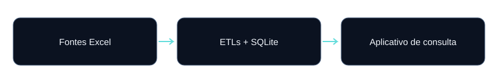

Case principal
Da planilha à consulta.
Como os ETLs de Água, Esgoto e Obra e a aplicação de pesquisa se conectam conceitualmente para organizar informações operacionais.
Um conjunto de fontes, diferentes regras.
Planilhas de sistemas e controles distintos podem representar a mesma matrícula de formas diferentes. Consolidar essas informações exige critérios explícitos para datas, visitas, identificação e origem.
A proposta reúne três etapas de preparação de dados e uma aplicação de consumo. O trabalho apresentado envolve transformação em Python, persistência SQL, testes e uma interface para consulta.
Visão da solução

| Componente | Entrega | Consumidor |
|---|---|---|
| ETL Água | Cadastro e links de fotos | Consulta de Água |
| ETL Esgoto | Cadastro, fotos e histórico de visitas | Consulta e histórico de Esgoto |
| ETL Obras | Registros WFM com matrícula, HD e data | Consulta de Obra |
| Aplicativo | Pesquisa e apresentação dos dados | Usuário da demonstração |
Na versão pública, cada ETL tem sua própria entrada e saída. O aplicativo inclui bancos fictícios gerados independentemente, com formato compatível com suas consultas. Não existe atualização automática entre os quatro repositórios nesta demonstração.
Regras específicas, sem generalização indevida
A mesma expressão — “quantidade de visitas” — representa regras diferentes nas fontes. No Esgoto, a consolidação soma acumulados mais recentes de períodos independentes. Em Água, BASE_AG tem prioridade e o AppDeep exclusivo usa contagem de ocorrências.
Em Obras, duplicatas de origem são preservadas e as recuperações não devem multiplicar linhas. Matrículas e hidrômetros ambíguos permanecem identificados para revisão, em vez de receber uma escolha especulativa.
Evidências públicas
| Projeto | Testes na validação | Evidência |
|---|---|---|
| ETL de Esgoto | 8 | Código, README e dados fictícios |
| ETL de Obras / WFM | 126 | Código, README e dados fictícios |
| ETL de Água | 1 | Código, README e dados fictícios |
| App Pesquisa Fictício | 3 | Código, README e dados fictícios |
Os 138 testes foram executados em 13/10/2026. A demonstração funcional utiliza amostras pequenas: os números não certificam capacidade de produção, disponibilidade ou ganho financeiro.
Explore cada componente
Escopo atual e evolução
O portfólio demonstra preparação de fontes, rastreabilidade, persistência e consumo dos dados. Agendamento coordenado, promoção conjunta das saídas, métricas de execução em volume e demonstração online do app são possíveis evoluções; não são funcionalidades entregues pelos quatro repositórios como conjunto.
Os sistemas internos permanecem separados. Nenhum arquivo ou dado operacional foi usado nos exemplos públicos.